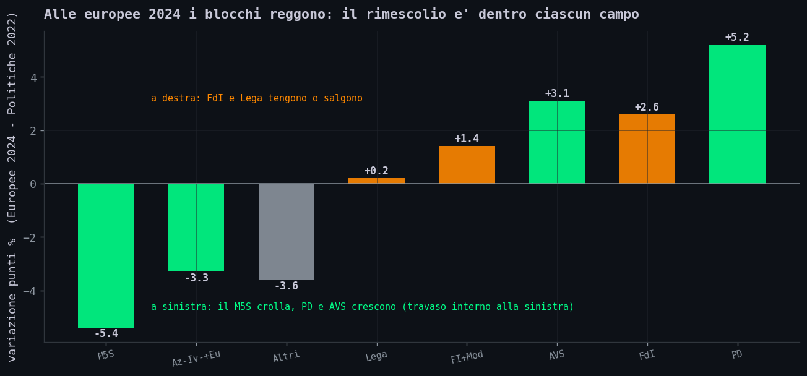
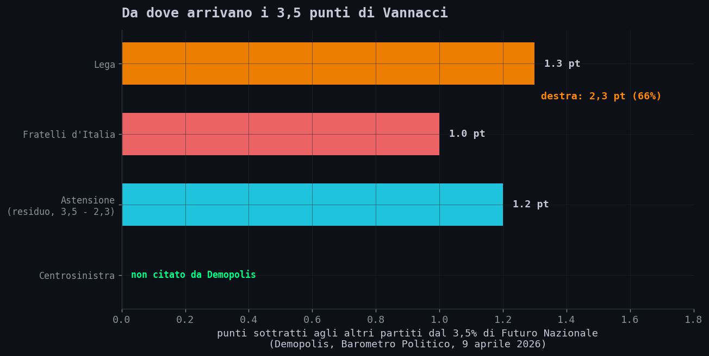
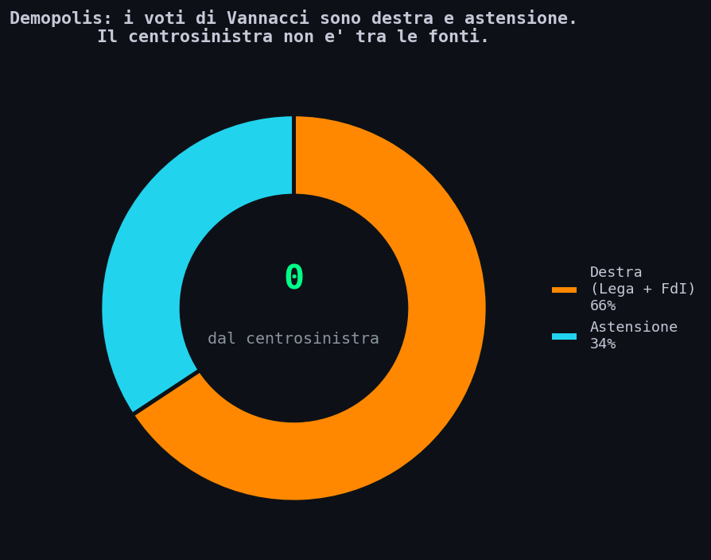
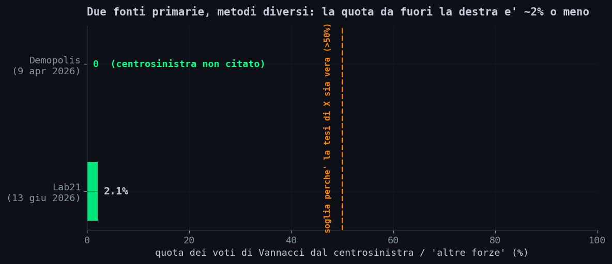
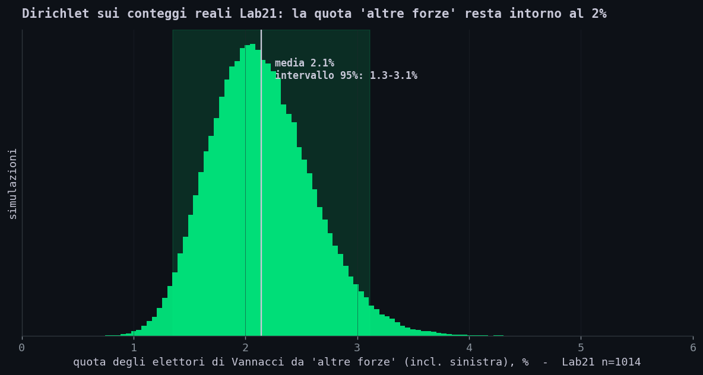
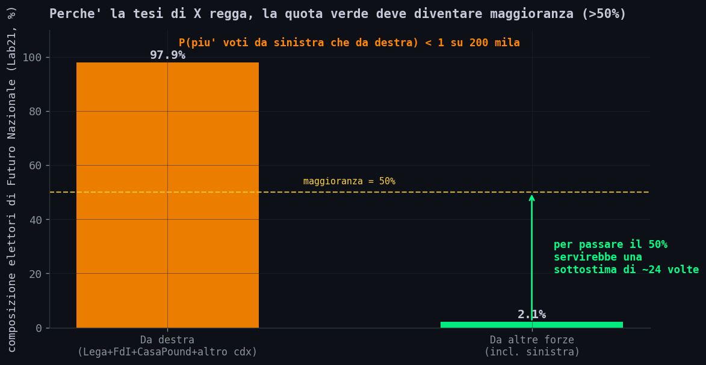
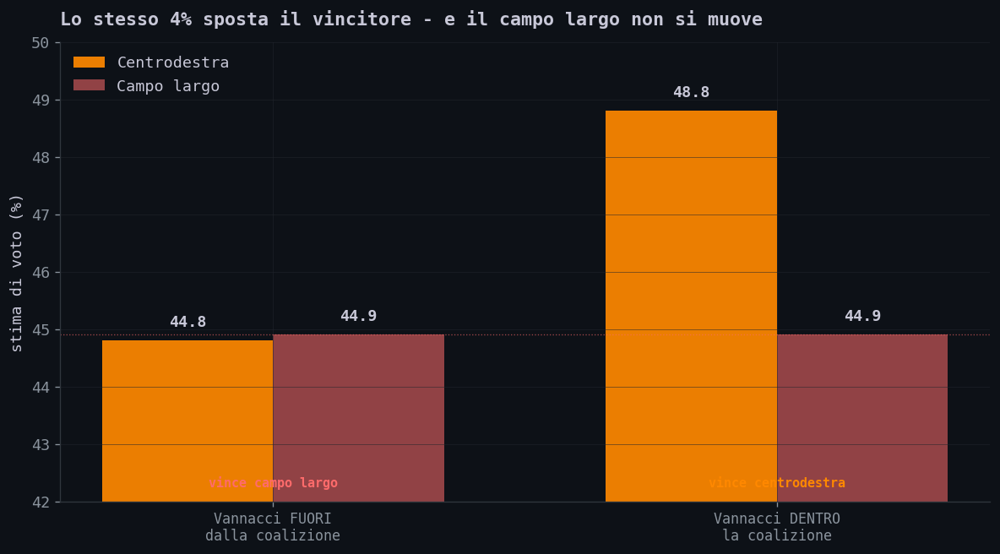
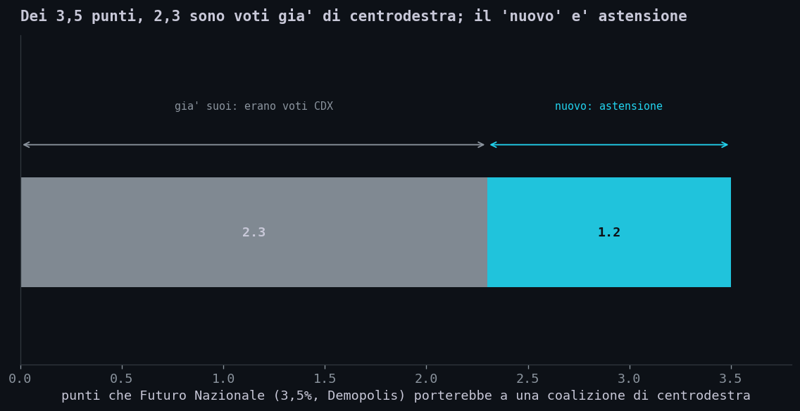

// La Frase Che Gira
Sezione 00. Una curiosita', non una tesi politicaNon m'interessa, qui, se Vannacci sia un bene o un male: m'interessa una frase che gira su X, declinata in mille varianti, e che a differenza di un'opinione si puo' misurare: "Vannacci ruba voti alla sinistra", "Futuro Nazionale pesca nel bacino del campo largo", "e' il nuovo argine al centrosinistra".
"In realta' Vannacci sta prendendo un sacco di voti delusi dal PD e dai 5 Stelle, gente di sinistra che non si sente piu' rappresentata." — uno dei tanti commenti, parafrasato. Lo trovi in venti varianti sotto qualsiasi thread sui sondaggi.
Mi puzzava perche' Vannacci viene dalla Lega, fa campagna su immigrazione, sicurezza, identita': temi che pescano a destra, non a sinistra. Ma il sospetto non basta. La cosa bella e' che questa frase non e' un'opinione: e' una previsione su dei numeri, e i numeri esistono. Si chiamano flussi elettorali. Andiamo a leggerli.
Una cosa va detta subito. La lista di Vannacci (Futuro Nazionale) non ha ancora votato a un'elezione vera: i numeri sulla provenienza dei suoi voti sono stime di sondaggio, non schede contate. Dove invece i voti sono stati contati, le europee 2024, il quadro e' lo stesso.
// Come Si Misura "Da Dove Arriva Un Voto"
Sezione 01. I flussi elettorali in due minutiIl voto e' segreto, quindi nessuno sa davvero cosa hai votato cinque anni fa e cosa voti oggi. Eppure si riesce a stimare quanti elettori si sono spostati da un partito all'altro. Due strade:
- Inferenza ecologica (la scuola dell'Istituto Cattaneo): si confrontano i risultati seggio per seggio tra due elezioni e, dai modi in cui salgono e scendono insieme, si stima la matrice degli spostamenti. Niente interviste: solo i numeri reali delle urne.
- Sondaggi panel / ricordo del voto: si chiede a un campione cosa ha votato prima e cosa voterebbe oggi. E' il metodo usato per le liste che non hanno ancora uno storico elettorale, come quella di Vannacci.
Entrambi hanno limiti, e li dichiaro: l'inferenza ecologica puo' sbagliare se nello stesso seggio gruppi diversi si muovono in direzioni opposte; il sondaggio soffre del fatto che la gente ricorda male (e a volte ricostruisce) il proprio voto passato. Per questo non mi fido di un singolo numero: cerco la convergenza tra il dato vero del 2024 e le stime di oggi. Se puntano nella stessa direzione, la direzione e' probabilmente quella.
L'idea chiave. "Da dove arriva un voto" non e' una domanda da bar: e' una grandezza stimabile. E una stima si puo' mettere alla prova, le si puo' attaccare un margine d'errore e si puo' chiedere: quanto dovrebbe essere sbagliata perche' la conclusione cambi?
// Il Precedente Dove I Voti Sono Stati Contati
Sezione 02. Europee 2024: l'unica volta che Vannacci e' finito in una schedaAlle europee del 2024 Vannacci si e' candidato nella Lega e ha fatto il botto di preferenze: 532.368, primo del partito in quattro circoscrizioni su cinque (Quotidiano Nazionale). E' l'unico dato vero, contato, che abbiamo su di lui. Solo che dice meno di quanto sembra.
Le preferenze sono voti dentro la lista: ti dicono che molti elettori della Lega hanno scelto lui, non da dove veniva quell'elettorato. Per quello servono i flussi, e quelli delle europee 2024 li ha stimati l'Istituto Cattaneo col modello di Goodman (la stima statistica dei travasi a partire dai risultati di tutte le sezioni di una citta'), pubblicandoli solo dopo i controlli sull'errore (Cattaneo, 10/06/2024). Cosa raccontano? Che i blocchi tengono, e il rimescolio avviene dentro ciascun campo.

Il Cattaneo lo scrive a parole sue: alle europee si trovano "flussi da FI e Lega verso FdI", e specularmente "da M5S e AVS verso il PD", mentre i due grandi partiti pescano dall'area del Terzo Polo ormai disciolto. Il M5S, che e' il partito che perde di piu', si disperde soprattutto nell'astensione. Detto altrimenti: i movimenti prevalenti osservati dal Cattaneo avvengono all'interno dei due blocchi, piu' una grossa fetta di elettori che torna nell'astensione. Il travaso da un campo all'altro, in quei flussi, non e' il protagonista.
E l'exploit personale di Vannacci? Le preferenze non raccontano i flussi, ma il contesto e' questo: la Lega, dove correva, quel giorno non e' esplosa (resta intorno al 9%, +0,2 punti sul 2022). Il suo mezzo milione di preferenze e' stato soprattutto una ridistribuzione dentro la destra, non una conquista di terreno avversario. Tieni a mente lo schema, perche' nel 2026 si ripete.
// Oggi: I Punti Di Futuro Nazionale
Sezione 03. La scomposizione del voto, numero per numeroVeniamo a oggi. Il partito di Vannacci, Futuro Nazionale, nei sondaggi della primavera-estate 2026 viaggia tra il 3,5% e il 5%. La domanda di X e': quei punti, da chi arrivano? Il dato piu' esplicito lo da' il Barometro Politico di Demopolis (demopolis.it, 9 aprile 2026), che stima Futuro Nazionale al 3,5% e ne descrive cosi' la provenienza, testualmente: sottrae "l'1,3% a Salvini, l'1% a Fratelli d'Italia, ma attingendo anche al largo bacino dell'astensione".

Mettiamo i numeri in fila. Dei 3,5 punti, 1,3 vengono dalla Lega e 1,0 da Fratelli d'Italia: 2,3 punti, i due terzi, sono voti tolti agli alleati di centrodestra. Il resto, circa 1,2 punti (cioe' 3,5 meno 2,3), Demopolis lo attribuisce all'astensione, gente che alle europee era rimasta a casa. E il centrosinistra? Non e' nemmeno citato come fonte. Messa in proporzione, la fotografia e' questa:
(Lega + FdI)
astenuti
(Demopolis: 0)
(stesso schema)

Una precisazione sul dato, perche' conta. Demopolis nomina solo Lega, FdI e astensione: non quantifica il centrosinistra. "Non citato" pero' non e' "misurato a zero": per mettere un numero su quella casella serve un secondo istituto, ed e' la prossima sezione. Per ora resta il fatto leggibile qui: la provenienza che Demopolis registra e' tutta a destra, piu' l'astensione.
Previsione: nei flussi, quota "da sinistra" alta
Dato osservato (Demopolis): fonti = Lega 1,3, FdI 1,0, astensione ~1,2; centrosinistra non citato. Previsione fallita.
// Due Misure, Stessa Direzione
Sezione 03b. Demopolis e Lab21, controllati alla fonteUn istituto solo non basta, e Demopolis per giunta il centrosinistra non lo quantifica nemmeno. Serve una seconda misura, di un altro istituto e con un altro metodo, che faccia il lavoro mancante: mettere un numero sulla quota da fuori la destra. Ce n'e' una, controllata alla fonte primaria: Lab21, per Affaritaliani, su 1.014 interviste.
| Fonte (data) | Da Lega | Da FdI | Altra destra | Astensione | Centrosinistra / altre forze |
|---|---|---|---|---|---|
| Demopolis (9 apr 2026) |
1,3 pt | 1,0 pt | — | ~1,2 pt | non citato |
| Lab21 (13 giu 2026, n=1.014) |
45,7% | 38,9% | 13,3% CasaPound 7,2 + altro cdx 6,1 | non rilevata | 2,1% |
Attenzione alle unita'. Le due fonti non misurano la stessa cosa e le righe non vanno sommate: Demopolis esprime la provenienza in punti sull'elettorato (su un totale del 3,5%) e include l'astensione; Lab21 (per Affaritaliani) da' la composizione percentuale dei soli elettori di Futuro Nazionale e misura solo i travasi tra partiti (l'astensione non entra, ed e' per questo che le sue percentuali di partito sono piu' alte). Direttamente confrontabile e' l'ultima colonna, ed e' quella che conta.

Le due fonti partono da metodi diversi e sui numeri grossi non coincidono. Ma sulla casella che qui decide tutto, quella da fuori la destra, convergono per due strade: Demopolis non la registra nemmeno, Lab21 la misura e la inchioda al 2,1%. Due strumenti tarati in modo diverso che cadono sullo stesso punto valgono molto piu' di un numero singolo.
Gli altri istituti (SWG, Noto, Tecne') vanno nella stessa direzione, "soprattutto Lega, FdI e astenuti", ma non pubblicano una matrice disaggregata che si possa aprire e controllare: restano fuori dal conto, validi solo come conferma qualitativa.
Un punto di metodo. Il modello statistico della prossima sezione quantifica l'incertezza dentro una stima. Ma a tenere in piedi un risultato e' soprattutto una seconda misura separata, con un altro metodo, che cade nello stesso posto: e' quella, piu' della simulazione, a dire che la direzione e' solida.
// Quanto E' Precisa La Stima
Sezione 04. L'incertezza campionaria, messa alla provaLe due fonti concordano sulla direzione; adesso quantifico quanto e' stretto il numero. Uso quello che ha un campione vero e una casella esplicita per la sinistra: Lab21, n=1.014. Modello la composizione del voto di Futuro Nazionale con una Dirichlet-multinomiale, lo strumento standard per le proporzioni: dai 1.014 intervistati ricavo i conteggi reali nelle cinque caselle di provenienza (con prior di Jeffreys, α = conteggi + 0,5) ed estraggo 200.000 composizioni possibili. Il vantaggio, rispetto a infilare un errore gaussiano su ogni numero, e' che il modello impone da solo le due cose che la realta' richiede: le quote non possono essere negative e devono sommare a cento. Non devo quindi assumere che le componenti siano indipendenti, perche' non lo sono. Poi guardo, nelle 200.000 simulazioni, quanto pesa la casella "altre forze", quella che contiene il centrosinistra.

La quota "altre forze" ha una media del 2,1% e un intervallo di confidenza al 95% tra 1,3% e 3,1%. Nemmeno nello scenario piu' generoso compatibile con i dati, e attribuendo per intero quella casella al centrosinistra, da sinistra arriva piu' di un trentesimo dei voti di Vannacci. La conclusione non dipende dall'aver preso per buono un singolo decimale: regge anche scuotendo il dato entro il suo errore campionario.
Perche' questo conta. Un conto e' dire "il sondaggio dice 2%", un altro e' dire "anche sbagliando il sondaggio nel modo a me piu' sfavorevole, e mettendo tutto il residuo a sinistra, resta sotto il 3,5%". La seconda e' una conclusione robusta. La frase di X avrebbe bisogno di un errore di rilevazione enorme e tutto nella stessa direzione per diventare vera: non e' un margine, e' un miracolo. E quel miracolo si puo' perfino quantificare.
// Quanto Dovrebbe Sbagliare Il Sondaggio
Sezione 04b. Il controfattuale, e la probabilita' diretta della tesi di XFin qui ho misurato l'incertezza. Adesso ribalto la domanda: invece di chiedermi "quanto sono sicuro che i voti vengano da destra?", mi chiedo "quanto dovrebbe essere sbagliata la rilevazione perche' la tesi di X diventi vera?". Perche' "Vannacci pesca soprattutto a sinistra" ha un significato numerico esatto: la quota in arrivo da fuori la destra dovrebbe superare quella in arrivo dalla destra.

Nei dati Lab21 sono 97,9% da destra contro 2,1% da altre forze. Il 97,9% non e' una categoria costruita da me: aggrega le quattro componenti dell'area di destra che Lab21 stessa riporta separate (Lega, FdI, CasaPound e "altro centrodestra"); il 2,1% e' la sua categoria residuale "altre forze", quella che contiene il centrosinistra. Perche' la seconda superi la prima deve diventare maggioranza, cioe' passare il 50%: la rilevazione dovrebbe aver contato 2,1 dove il valore vero supera 50, una sottostima di circa 24 volte. Non l'errore di campionamento, che su 1.014 interviste vale poco piu' di un punto; un errore di oltre un ordine di grandezza, tutto nella stessa direzione. I sondaggi sbagliano, ma non cosi'.
Lo stesso, detto in probabilita'. Nelle 200.000 estrazioni del Dirichlet ho contato quante volte la quota "altre forze" supera quella di destra: zero. Non "poche": nessuna. Sotto questo modello, la probabilita' che la maggioranza dei voti di Vannacci venga da sinistra e' troppo piccola per emergere in 200.000 simulazioni: empiricamente, sotto una su 200.000. E' il limite superiore alla probabilita' dell'evento, non un rapporto di verosimiglianza fra le due teorie (che sarebbe un altro conto). Ma per la sola domanda che qui conta, "puo' reggere la frase di X?", un evento che non capita mai in duecentomila prove e' gia' una risposta.
la rilevazione dovrebbe sbagliarsi
di una ventina di volte, in una sola direzione.
I sondaggi non si sbagliano cosi'."
Controfattuale e probabilita' diretta sono due letture dello stesso dato Lab21: convergono perche' descrivono lo stesso scarto, 97,9 contro 2,1.
// Allora Perche' "Sembra" Aiutare La Sinistra?
Sezione 05. L'ago della bilancia e' aritmetica, non un travasoQui c'e' la parte interessante, quella che secondo me genera l'equivoco. Perche' tanta gente e' convinta che Vannacci favorisca il centrosinistra? Perche' guardano il risultato finale e ne deducono la causa sbagliata. Guardiamo i numeri della Supermedia YouTrend/AGI del 1 giugno 2026.
Con Futuro Nazionale lista a se', il centrodestra e' al 44,8% e il campo largo al 44,9%: il centrosinistra e' davanti di un soffio. Se Vannacci rientrasse nella coalizione, il centrodestra salirebbe a 48,8% e tornerebbe a vincere. Lo stesso 4% di Vannacci ribalta chi vince. Da qui il salto logico: "quindi Vannacci sposta voti tra i due campi".

Guarda bene il grafico. C'e' un dettaglio che smonta tutto: la barra del campo largo non si muove. Resta 44,9 sia con Vannacci dentro sia con Vannacci fuori. Vannacci non tocca il centrosinistra: ne' gli toglie ne' gli da' voti. Allora cosa cambia? Cambia dove vengono contati i suoi voti. Scomponiamo quei punti che porterebbe a una coalizione di centrodestra, con le proporzioni misurate da Demopolis (3,5%):

Dei 3,5 punti, 2,3 erano gia' voti del centrodestra (la Lega e FdI) che Vannacci si era portato via: rientrando, non li aggiunge, li restituisce. Solo ~1,2 punti sono davvero nuovi per il blocco, ed e' mobilitazione di ex astenuti; il centrosinistra, lo abbiamo visto, non compare proprio. L'"ago della bilancia" e' tutto qui:
Il meccanismo, in una riga. Vannacci da solo sottrae ~2,3 punti al centrodestra (che cosi' scivola sotto il campo largo); Vannacci alleato glieli rida' (e il centrodestra torna sopra). Il campo largo, in mezzo, non si e' mai mosso. Sembra che Vannacci sposti l'equilibrio tra i due schieramenti, ma sta solo spostando voti dentro la destra, dentro e fuori dal recinto della coalizione.
E' la differenza tra spostare un peso da un piatto all'altro della bilancia e togliere e rimettere un peso sullo stesso piatto. Visivamente l'ago fa la stessa cosa, ma sono due fenomeni diversi. La frase di X confonde il secondo col primo: vede l'ago muoversi e conclude che il peso e' passato dall'altra parte. Non e' passato da nessuna parte: e' sempre stato a destra.
La distinzione che regge tutto. Vannacci puo' favorire il campo largo, ma in modo indiretto: dividendo la destra, non sottraendo un solo voto all'avversario. Un partito puo' danneggiare una coalizione senza togliere un voto allo schieramento opposto. "Far perdere la mia coalizione" e "portare voti all'altra" sono due cose diverse: qui la prima e' vera, la seconda no. La leggenda del Vannacci-che-pesca-a-sinistra nasce dal trattarle come la stessa frase.
// Il Verdetto, Riga Per Riga
Sezione 06. Cosa e' vero, cosa e' falso| Affermazione che gira su X | Verdetto | Perche' |
|---|---|---|
| Vannacci prende i voti dalla sinistra | SMENTITO DAI DATI | Demopolis non cita il centrosinistra tra le fonti; Lab21 lo stima al 2,1%. Dirichlet: media 2,1%, < 3,5% anche nel caso peggiore; P(piu' da sinistra che da destra) < 1 su 200.000 |
| Vannacci toglie voti al centrodestra | VERO | 1,3 dalla Lega + 1,0 da FdI = 2,3 punti su 3,5 (66%, Demopolis); Lab21: 97,9% da destra |
| Vannacci mobilita gli astenuti | VERO | ~1,2 punti su 3,5 (34%), il residuo che Demopolis attribuisce all'astensione |
| Senza Vannacci il centrodestra perde | VERO MA FRAINTESO | E' aritmetica di coalizione: il campo largo resta a 44,9, non riceve nulla da lui |
| Quindi Vannacci "aiuta" la sinistra | FALSO | Confonde "sottrae voti alla sua coalizione" con "regala voti all'altra". Sono cose diverse |
Riconoscere questo schema serve oltre Vannacci: ogni volta che un terzo incomodo "fa vincere l'avversario", la domanda giusta non e' "a chi ruba i voti il nuovo arrivato", ma "il blocco avverso e' cresciuto, o e' solo quello vicino a essersi diviso?". Quasi sempre e' la seconda.
// Conclusione
Fine trasmissioneSono partito da una frase letta cento volte su X e dalla sensazione che non quadrasse. La sensazione non e' una prova, ma dice dove scavare. Ho scavato, e i numeri sono concordi su due livelli diversi: il dato vero delle europee 2024 (la destra si rimescola dentro se stessa) e le stime di oggi (due terzi dei voti di Vannacci da destra, un terzo dagli astenuti, e dal centrosinistra una quota che Demopolis non registra nemmeno e Lab21 ferma al 2,1%), per giunta robuste all'incertezza di sondaggio.
L'equivoco nasce da un cortocircuito comprensibile: senza Vannacci nella coalizione il centrodestra va sotto, quindi "Vannacci aiuta la sinistra". Ma la sinistra, in quei numeri, non si muove di un millimetro. Vannacci sposta voti dentro il suo campo, non tra i campi. E' un fenomeno tutto interno alla destra: ne' un travaso, ne' un argine. Una scissione, semmai.
Si puo' pensare tutto il bene o tutto il male di Vannacci: e' legittimo, ed e' un'altra discussione. Ma "prende i voti dalla sinistra" e' una di quelle affermazioni che suonano profonde e si sgonfiano appena le tocchi con i dati. Non e' una questione di opinioni: e' una questione di dove arrivano i voti, e i voti hanno lasciato le impronte.
non ha cambiato piatto.
Vannacci non pesca a sinistra:
divide la destra."
Dati: Istituto Cattaneo (flussi europee 2024), Demopolis e Lab21 (provenienza voti, giugno 2026), Supermedia YouTrend/AGI. Codice della simulazione e dei grafici nel repository, riproducibile.
// Le Fonti, Una Per Una
Appendice. Tutto pubblico, tutto ricontabile| Dato | Valore | Fonte |
|---|---|---|
| Preferenze Vannacci, europee 2024 | 532.368 (1° nella Lega) | Quotidiano Nazionale |
| Flussi europee 2024 (modello di Goodman) | blocchi stabili: FI/Lega→FdI, M5S→astensione e PD; variazioni 2022→2024: M5S −5,4, PD +5,2, Lega +0,2 | Istituto Cattaneo (PDF, 10/06/2024, Tab.1 e Fig.2) |
| Provenienza voti FN (Demopolis) | FN 3,5%: sottrae 1,3 alla Lega, 1,0 a FdI, il resto all'astensione; centrosinistra non citato | Demopolis, Barometro Politico (9/04/2026) |
| Provenienza voti FN (Lab21, n=1.014) | Lega 45,7% / FdI 38,9% / CasaPound 7,2% / altro cdx 6,1% / altre forze 2,1% | Lab21, via Affaritaliani (13/06/2026) |
| Stime di lista e coalizioni (1 giu 2026) | CDX 44,8 / Campo largo 44,9 / FN 4,0 (FdI 28,4, PD 22,2, Lega 7,0) | Supermedia YouTrend/AGI |
| Simulazione Dirichlet-multinomiale (200k iter.) | sui conteggi reali Lab21 (n=1.014): quota "altre forze" media 2,1%, IC95% 1,3–3,1%; P(altre>destra) < 1/200.000 (per diventare maggioranza servirebbe una sottostima ~24×) | genera_grafici.py (questo repo) |
Nota sul metodo. I dati sulla lista Vannacci sono stime di sondaggio: la lista non ha ancora affrontato un'elezione politica. La simulazione Dirichlet-multinomiale modella l'errore campionario sui conteggi reali di Lab21 (n=1.014, prior di Jeffreys), non eventuali distorsioni sistematiche del ricordo del voto; e' un controllo di robustezza, non una garanzia di esattezza. Un'avvertenza dovuta: le fonti qui usate poggiano su metodologie diverse e non confrontabili voto per voto, e proprio per questo non le sommo ne' le medio. I flussi del Cattaneo nascono da inferenza ecologica (modello di Goodman) sui risultati reali delle urne; la scomposizione Demopolis e quella Lab21 da sondaggi sul ricordo del voto, ma con categorie diverse (Demopolis include l'astensione e ragiona in punti sull'elettorato; Lab21 misura i soli travasi tra partiti). Le tratto come verifiche separate, ottenute con strumenti diversi (non come misure indipendenti in senso statistico: non so se gli istituti condividano pesature o bias): il valore sta nel fatto che strumenti cosi' diversi cadano sullo stesso punto, non in un singolo numero. Tutte le cifre qui riportate sono state controllate alla fonte primaria; le sintesi di altri istituti (SWG, Noto, Tecne') sono citate solo come conferma qualitativa della direzione, perche' non ho potuto aprirne la scomposizione disaggregata.